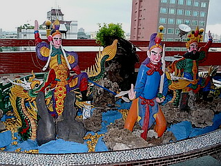

南天宮/台中市
台湾大佛列伝3、修行の場を台中市に移す。
台中市はかれこれ10年ぶりだが駅前の西日暮里ネシア～ンな様子などは以前とあまり変わらないような気がする。
ここもまた出迎えてくれたのは激しい雨が降ったりやんだり。もー、いつまで天気が悪いんだかー。
で、早速訪れたのは駅の北西にある南天宮。
線路沿いにあるので電車で台中入りされたことがあれば「ああ、あのでかい人かあ」と思い出される方も多いだろう。
先も見えないほどの豪雨が一瞬止んだ先に巨大なおじさんが現れた。
赤い顔、長いヒゲ、そう関羽こと関帝である。
台中隋一の大関帝像である。
ここも市街地の大仏（というか大神像）らしくクラシカルな前殿があり、その後ろに関羽像が控えている按配。
角を曲がれば突然現れる唐突さをゆっくり楽しみたかったが、またしても豪雨が。
慌てて中へ駆け込む。
前殿には当然のように関帝が祀られている。
関羽の隣に中元普度の張り紙がある。
これは冥宅をしつらえたりして亡くなった人の霊を慰める中国の行事なのだ。まあお盆ですね。
廟内にはその中元普度に使用する冥宅や「あの世グッズ」が置かれていた。
これもまた他の中華世界と同様に紙で出来た精巧な筆記用具、お菓子、金紙、などがパックされており、思わずお土産に買って帰りたくなる出来栄え。しかし持って帰っちゃいけないんだな、コレ。
最近は（特に台湾やシンガポールあたりでは）紙銭やこうした供養グッズを燃やす事が環境問題に発展するなど何かと世知辛い世の中だが、是非ダイオキシン発生ゼロの冥宅などを開発して後世にまでこのファンキーな習俗を残していただきたいものである。
科学の粋ってそういうものに使うんでしょ？
前殿で一通り参拝した後、後殿に向かう。
後殿は比較的新しい建物で、エレベータがあったりする。
1979年に建物が造られ、その後1984年に関帝像が完成したという。
建物込みの総高さは約44メートル。実際の像高は30メートル弱か。
1999年に台湾を襲った921地震の際には損傷を受けたようだが見る限りその面影はない。
後殿に入ってすぐにこんな素敵なゲートがお出迎え。
中は何てことないただの太鼓橋なのだが、一体何の目的で作ったのか謎のゲートだった。
3階に上がるとそこはミニチュア関帝が並ぶ千聖殿。
壁に作りつけられた棚に一体一体関帝像が納まっている。
気になったのは関帝像の近くにの机の上に積まれていた缶詰。
見れば関帝像にも奉納されている。
「功徳漆」…むむむ。コレは一体何だ？
もしかしてこの缶を開けると顔が真っ赤に腫れ上がるほどありがたい漆が詰まっているのでは。
恐る恐るランニングに短パンのおじさん（なぜか当たり前のようにいるのがポイント）に聞いてみたら、大関帝像の塗り替えの時に使うペンキだそうで。あ、漆ってペンキのことなのかあ～。
4階は観音殿。
若いカップルが一生懸命お願いをしていた。
やっぱり「お金が儲かりますように…」という願いだったりするのだろうか？
で、5階の天公殿。
ここには先ほど前殿にもあった謎のツボが並んでいた。
中には正体不明の液体が。きっと参拝者の汗と涙が詰まってるんでしょう…

そして最上階。
ここにはテラスがあり、台中市の車ブンブン湿気ムンムンの活気ある街並みが見下ろせる。
そんなテラスに巣食う方々。
関帝を祀る廟だけに三国志なんでしょうけど…味がありすぎて判りませんでした。

このフロアは建物を周回するように回廊が設けられていて、財神洞と名づけられている。
要はアナタの御贔屓の神さまに金儲け関係の願い事をばっちり聞いてもらいなさい、という趣向のようだ。
しかしどの神さまもパパイヤ鈴木みたいなおっさんばかり。
かなりねちっこい金儲けの話しかできなさそうな雰囲気が漂っている。
このフロアの中央には階段が。
関帝像の胎内へいたる階段なのだがこれも見事に閉鎖されていた。
…何となくそんな気はしてたんですけどね…
聞くところによると、大地震の際、この大関帝像もダメージを受けたという。
もしかしたらその影響で中に入れないのだろうか。
ひょっとして大地震以降、台湾全土の大佛に胎内巡り戒厳令が敷かれた可能性も考えられるが、良く考えてみたら、前回台湾に来たのは大地震以降で、その時も鳳山寺の斉公活仏像の胎内に登頂しているのでそんなことはないのか…
再びテラスに出て真下から関帝像を拝む。
トラの敷皮が目の前に迫ってきて怖いぞ。
頭の上にはチョウチンアンコウのようにアンテナを付けていらっしゃる。
これで台中の人々の悩みをキャッチして救済しているのかもしれないが、もしかしたら電波の届きにくい難視聴地域の皆さんを救っているのかもしれない。
再び1階に戻る。
後殿の脇に出るとそこにも三国志チックなジオラマがちらほら。
おっ、桃園の誓いですね。趙飛が凄い事になってます。
外に出るといつの間にか真っ暗に。
日が暮れたのではなく雨雲が厚くて夜みたいになっちゃったのだ。
派手なコスチュームに真っ赤な顔、関帝は大神像にするには格好のモチーフだと思う。
次は貝殻だ！
台湾大佛列伝3